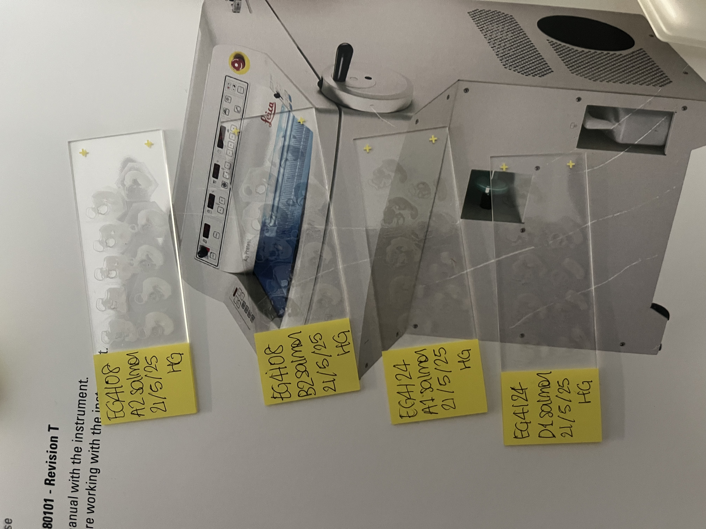
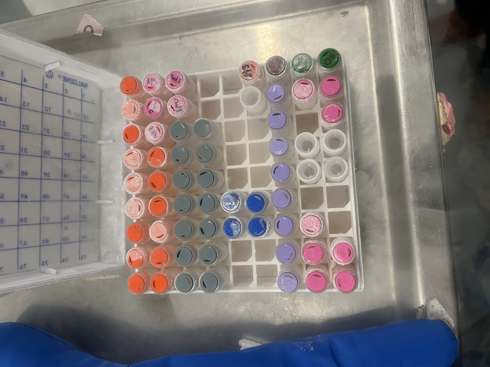
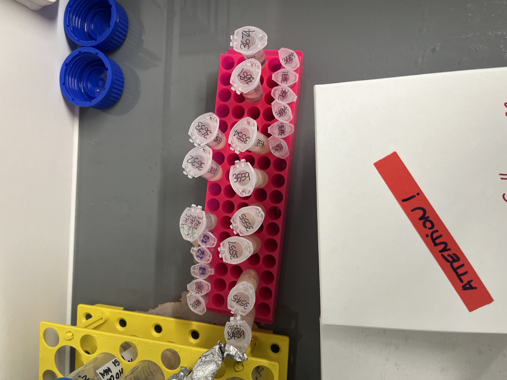
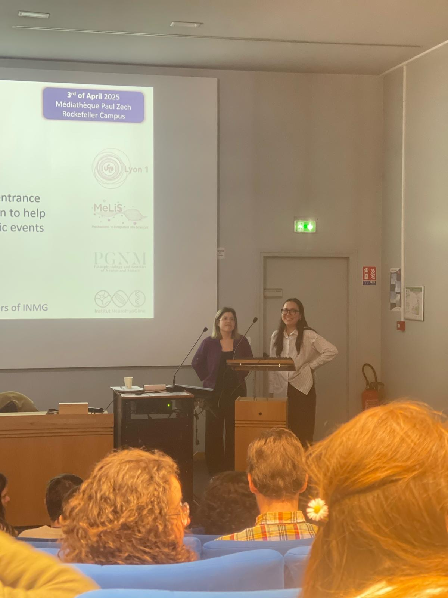
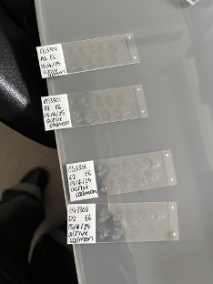
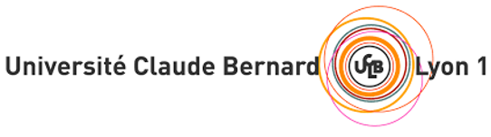
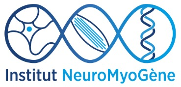
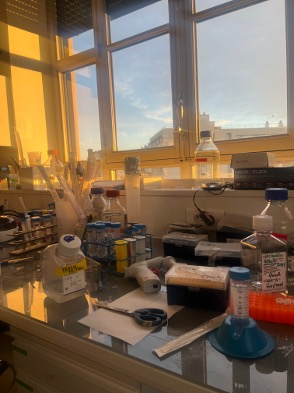

PUBLIC SPEAKING
YOUNG RESEARCHERS IN NEUROSCIENCE, LYON
I presented my team's experimental model and findings from my placement at the Institut NeuroMyoGène in Lyon, France. This Young Researchers in Neuroscience internal conference was open to all young scientists at the lab, ranging from Master's students to PhDs to research assistants.
The Concept
The central aim of the project was to utilise an embryonic chick model to mimic the leptomeningeal metastasis observed in Group 3 medulloblastoma (G3 MB). The presentation described how I grafted the G3 MB cell line (HDMB03) into the central canal of the early chick embryo, and what techniques were used to visualise the migration of the cells.
These experiments were conducted after I carried out a literature review researching what is currently known about the fluid dynamics of the cerebro-spinal fluid (CSF) within the embroynic central canal. From this, though there was no literature describing the dynamics in a chick embryo, we were able to establish a bidirectional CSF flow within the central canal which we took into consideration when designing the experiments.


The Process
I structured the presentation clearly to establish a linear sequence of experimental considerations and decisions. I wanted to display the aims explicitly and to show how we accomplished these goals, whilst also leading into the next steps of the project.
Though I did not present the results at the conference, I was able to qualify the topography of some of the metastatic HDMB03 cells within the leptomeningeal space after visualising them with a light sheet microscope.
Skills Developed
Science Communication
Audience Awareness
Creative Thinking
Visual Storytelling
Final Outcome
The presentation was very well received and the Q&A left allowed for any unanswered queries from the audience. Though the attendees were all from the institute, the reserach spans across neuroscience, so I was grateful to have the opportunity to strengthen my public speaking skill and to practice explaining the details of our chosen experimental models and decisions.









